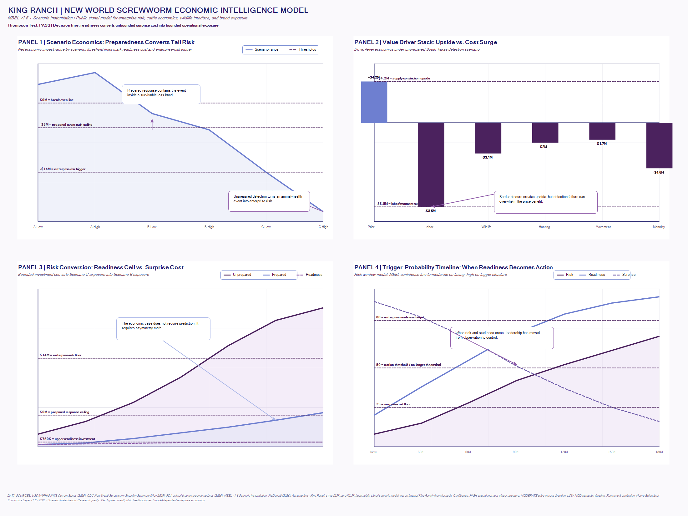

Scenario A · 45-55%
Containment Holds
Supply constriction supports price realization. Readiness remains a bounded insurance-like investment. Upside can be captured if operations stay prepared.
New World Screwworm · Cattle Economics · Brand Trust
This public-signal scenario model stress tests New World Screwworm as an enterprise-risk event, not only an animal-health issue. The model connects cattle supply, operational readiness, wildlife interface, hunting/recreation exposure, and brand confidence.
01 · Executive Dashboard
The FRED-style dashboard turns the scenario economics into thresholds, triggers, value drivers, and a readiness-conversion curve.

02 · Scenario Logic
The stress test does not ask whether the model is impressive. It asks what breaks first if the assumptions are wrong.
Supply constriction supports price realization. Readiness remains a bounded insurance-like investment. Upside can be captured if operations stay prepared.
The event is costly but contained. Early detection, crew training, veterinary alignment, and agency coordination prevent mortality cascade and brand confusion.
The event becomes enterprise risk: late detection, operational surge, movement restriction, wildlife exposure, hunting/recreation confidence loss, and brand exposure.
03 · Interactive Stress Test
Adjust the public-signal assumptions and watch how quickly the readiness case strengthens or weakens.
This is a directional stress tool, not a private financial model. It shows how assumption movement affects the readiness case.
04 · Stress-Test Verdict
The original model survives directionally, but the stress test widened the downside bands and identified where the assumptions are most fragile.
The model is directionally sound, but its exact dollar values should be treated as scenario bands, not point forecasts.
Sales timing, regional basis, feedlot demand, movement restrictions, futures volatility, and drought can reduce or reverse the benefit.
The cost is not only treatment. It is repeated wound surveillance across cattle, wildlife zones, working animals, and contractor contact points.
The wildlife-livestock multiplier should be tested at 1.6x-2.4x in severe cases, especially across large acreage and hunting/recreation zones.
The retail risk is not infection. The retail risk is uncertainty plus silence once public attention touches the King Ranch name.
USDA posture is serious, but ranch-level readiness cannot depend entirely on trap coverage, sterile fly timing, reporting speed, or county execution.
05 · Revised Scenario Table
Scenario B probability moves up if leadership acts now. Scenario C downside widens because wildlife and brand exposure are harder to bound.
+$2.5M to +$6.0M. Price upside remains possible, but the benefit is vulnerable to sales timing, basis, demand, and pasture conditions.
-$2.5M to -$7.0M. Costly but manageable if early detection, veterinary alignment, crew training, and communications are already live.
-$12M to -$28M. Downside widens when late detection, wildlife interface, movement restriction, hunting confidence, and brand exposure compound.
06 · Sensitivity Matrix
These are the pressure points that would change the conclusion, narrow the confidence band, or force a new executive decision.
Largest direct cost driver. This is the fastest way the model moves from operational issue to enterprise risk.
Most likely underestimated due to labor scarcity, repeated inspection, treatment timing, and veterinary constraints.
Expands the detection surface beyond cattle and into deer, feral hogs, working animals, carcass detection, and hunting operations.
Delay is the conversion mechanism. It turns a biological issue into cost surge, mortality risk, and public-confidence exposure.
This is the bridge between animal health and brand-confidence economics.
Overbuild risk exists, but even the high spend remains materially below surprise-cost exposure.
07 · Reusable Prompt
This is the compressed version of the MBEL stress-test prompt. The full version can live beside this page in the repo.
Run MBEL v1.6 with ESIL and Scenario Instantiation against the New World Screwworm enterprise-risk model. Do not confirm the original model. Stress test it. Attack the assumptions across: - feeder cattle price upside - operational cost per affected head - wildlife-livestock interface multiplier - USDA/TAHC response dependency - brand and retail confidence risk - hunting/recreation exposure - detection timeline - readiness investment ROI Required output: 1. MBEL stress-test verdict 2. assumptions most likely to break 3. revised scenario probability table 4. sensitivity matrix 5. brand / retail exposure read 6. public-sector dependency read 7. readiness-cell economic case 8. Thompson Test 9. executive red-team questions 10. final executive line Calibration rules: - label assumptions - separate public-signal model from internal audit - use confidence ratings - state what data would change the conclusion - no certainty theater Final standard: What would leadership do differently Monday morning if this model is directionally correct?
Executive Translation
The practical question is not whether this model is perfect. The practical question is whether the cost of readiness is small enough relative to the cost of surprise that leadership should act before confirmation.